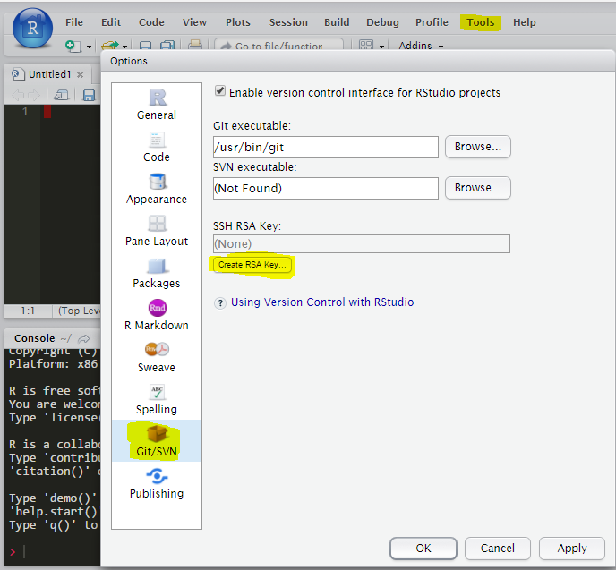
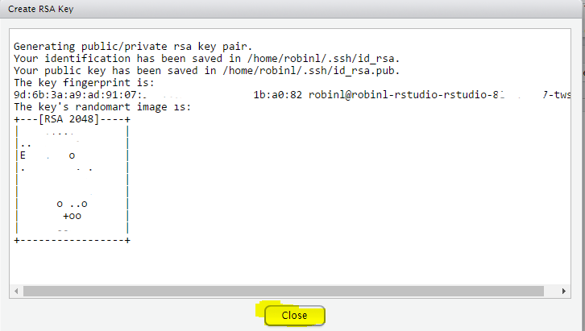
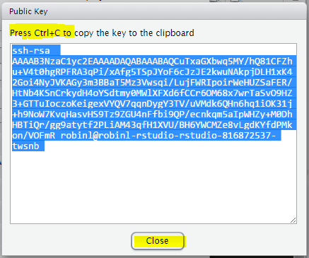
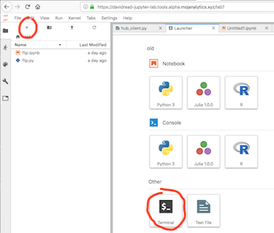
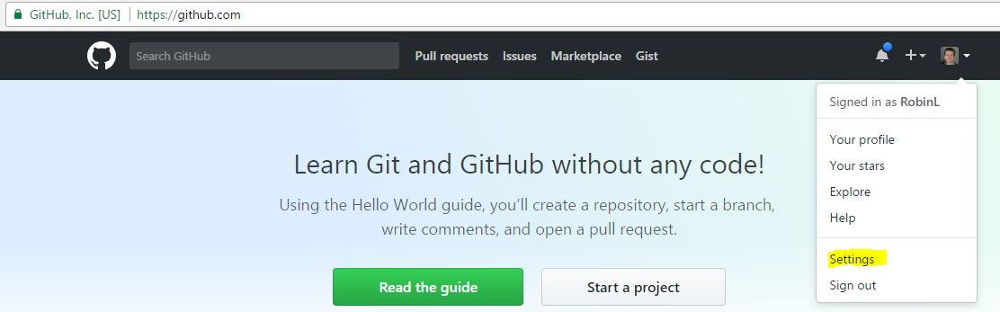
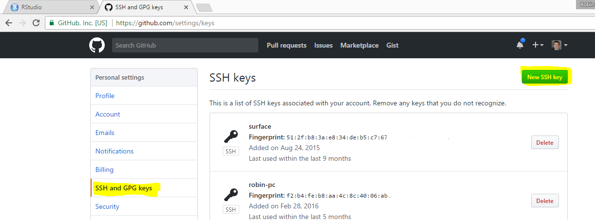
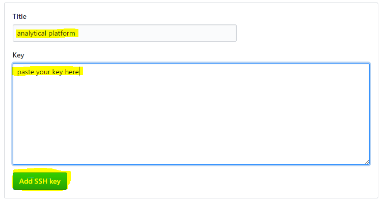

Part 2 Getting Started
2.1 Getting an account
You use a specially authenticated Github account to log into the platform, which you can set up as follows:
2.1.1 Sign up to Github
If you do not already have an account, head to https://github.com/ and sign up. When signing up, use all the default options, and make sure you save recovery codes as instructed. It’s good practice to choose a username that does not feature upper case characters.
We recommend new users use their @justice email address. If you already have a personal Github account, you may also use that.
You’ll receive an email with a verification link - you need to click this before using the platform.
2.1.2 Enable two-factor authentication on your Github account
Once you’ve signed up to Github, you must enable two factor authentication on your Github account to enhance security. You can do this in your Github settings page.
You are given the option of doing this using SMS, or an authentication app such as Authy or Google Authenticator . Choose whichever you prefer.
For step-by-step instructions, see the Github guidance for authentication apps or SMS authentication.
2.1.3 Email us your Github username
Once you’ve got a Github account setup, email your github username to the shared mailbox (analytical_platform@digital.justice.gov.uk) and we will invite you to the private MoJ Analytical Services organisation. Once we’ve done this, you can accept the invitation by visiting the MoJ Analytical Services organisation, or by using the link in the email you’ll receive from Github.
2.1.4 Read the acceptable use policy
Before you start using the platform, please read the acceptable use policy.
2.2 Accessing the platform
Use the control panel to access R Studio and other parts of the platform.
Using the control panel, you can also set up and manage team-based data access.
2.2.1 Accessing the platform
You may use any formal MOJ technology solution such as DOM1, Quantum, MOJ Digital & Technology or Workplace Technology laptops to access the platform.
If you wish to access the platform from another formal HMG technology solution (for example, a laptop provided by another government department) you must ask first (analytical_platform@digital.justice.gov.uk).
You must not access the platform from a non-MOJ device, such as a personal mobile phone or laptop.
When you first access your platform account, you will be asked to set up additional two factor authentication for the platform itself. You must do this using an authentication app on your personal or work phone (such as Authy or Google Authenticator). There is no SMS option.
For step by step instructions on setting up this 2FA, see here.
For troubleshooting 2FA issues, please see this section of the user guidance.
2.3 Configuring Git and Github for use on the Analytical Platform
Github enables you to collaborate with colleagues on code and share you work with them. It puts your code in a centralised, searchable place. It also enables you to version control your work.
In order to use Github, you need to set up a connection between your Analytical Platform account and Github. This needs to be done once, after which your Analytical Platform account will permanently be connected. It is worth doing because it avoids you having to repeatedly type in your username and password every time you interact with Github.
This page covers only the initial setup. For guidance on how to use Git to sync your work with Github, please see here.
You can find more detailed notes about setting up Git with R Studio here and here
2.3.1 Instructions
The overview is as follows:
- Create an ‘SSH key’ within your platform R Studio or Jupyter. This is an unique code that is stored in your account. Having the key means you will not need to enter your password when interacting with Github.
- Register the key with Github.
- Configure git to use your username and email address.
2.3.1.1 Step 1 - create an SSH key
You can create your SSH key two ways:
2.3.1.1.1 Method 1: using R Studio:
Tools -> Global options -> Git/SVN -> Create RSA key...

You will be presented with dialog showing your key fingerprint, amongst other details. You do not need this information, therefore close the window:

For the next step, you’ll need to copy and paste your SSH public key. You can copy this to the clipboard using the following dialogues:


2.3.1.1.2 Method 2: using Jupyter terminal:
In Jupyter open a terminal by clicking the “+” then “Terminal”:

Create a new one, putting in your own email address:
ssh-keygen -t rsa -b 4096 -C "my.name@justice.gov.uk"When it asks for the filename and passphrase, just press Enter (leave them blank):
Enter file in which to save the key (/home/jovyan/.ssh/id_rsa):
Enter passphrase (empty for no passphrase):
Enter same passphrase again:For the next step, you’ll need to copy and paste you SSH public key. First view it:
cat /home/jovyan/.ssh/id_rsa.pubThen select it and copy it with cmd-C (Mac) or Ctrl-C (PC). It should ressemble this:
ssh-rsa AAAAB3NzaC1yc2EAAAADAQABAAACAQDsv0c89Bp7aCrMsSSy2en/aW89QRvJF75MZYxRN3As11KNFpYW0ocWxp5sKu5JA7b/h5Hg0Uv+SL11gN3DXZtYVFfX64iXIDoqAzfsdSWG1WaOSkUK3VyX8ByVhLWwisddfwPScQDOfipdYtQXg1574+HPZY6VTnQtksbgsSCULPml4kcEleX9evSBZRPAETBM5tlOTh8TVM2N+0r8G5eksd0F8T6byrXKj2+bRCVVUE5p5q5qryKd7cioOpE8fxU1wbB2Dg8fzsn5wAuySuOjRuuS5iecwfKIMxcIP/RoAimOdXdDMX7tI5wyaHWpLM3kKwYHQ3+JgEQPJPi37m2Ms29/ErZPf9Sa5/G6r2bA3wqz9A9o3z5BOxMGlXk73o1B3+oMGRFiFzefF/JyG92IyZNLYk8e6MShHgXDZvNwwPS318nxH4PtibGCturDH6YTM/V5qN/oV8zKTnuQBSsmjk5G8PAyWxScrPbxXbpRgvykg9NkBWUEVV2Ep9OZSERCxfloBKvSEDNxQTWmksXVAK0S0uz7sy+mEVw6M1GCYiMSLxGzXW03Q9dM8YKvLHAEGXmq1Qi1ZIDSxpzXMJLekKHW9E+Aru+yQI9ESwGh7BOLfBkLXlk9EEsxrh4zfFYM0JvKNO/ETd86JeltmJUFJUt8OS35JvYY00YGaMG86w== alice.jones@digital.justice.gov.ukYou can find more information about SSH keys in this guidance.
2.3.1.2 Step 2: Register the key with Github.
The next step is to register your SSH public key with Github, using the interface on www.github.com. This guidance assumes you have copied your public key to your computer’s clipboard in the previous step.
First, navigate to the Github homepage. If you are not logged in already, you will need to log in.
Access your settings from the menu that appears when you click on your profile picture in the top right. Once in settings, access your SSH and GPG keys. Here’s a direct link.

Click on New SSH key.

Paste your key into the dialogue that pops up and click Add SSH key. You can choose any name you like for the ‘title’ of the key.

The link with Github and the Analytical Platform is now established. You can now return to the analytical platform.
- Configure your Git name and email address within the analytical platform.
To start syncing your work with Github, Git needs to know a bit more about you.
Within R Studio, access the shell using Tools -> Shell...
Then, you need to type the following commands (substitute your user name and email):
git config --global user.name 'Your Name'
git config --global user.email 'your@email.com'You’re now ready to start using Github!
2.3.2 Using Git with the Analytical Platform
We have written an introductory guide to using Git which you can access here.
2.4 Guidance on writing code
Please read the coding standards.
2.5 Training Resources
The data science team maintain a list of R training here.